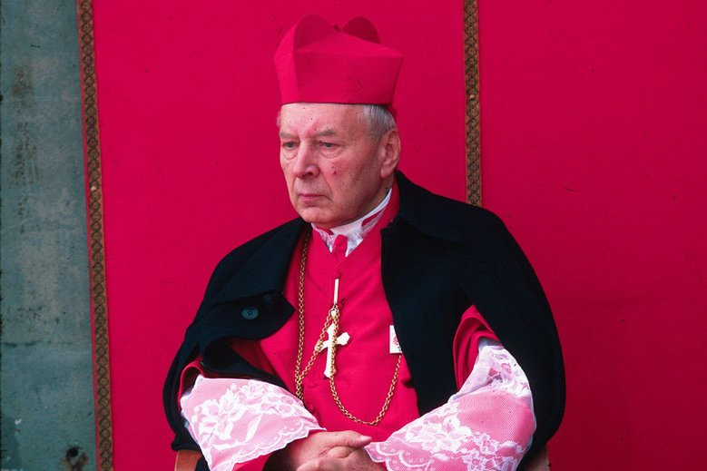
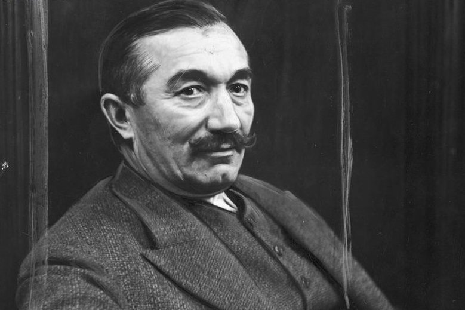
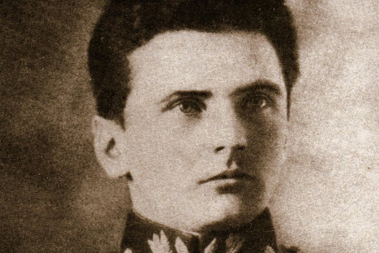

Artykuły:
- Strona główna
- Ważne Osoby
- Galeria

STEFAN WYSZYŃSKI
W 1950 roku Wyszyński porozumiał się z władzami PRL – potępił działalność partyzancką oraz uznał zachodnią granicę Polski w zamian za zgodę na nauczanie religii w szkołach. Już trzy lata później został jednak aresztowany i internowany.

WINCENTY WITOS
stać, która pozostaje w cieniu Piłsudskiego i Dmowskiego. Niesłusznie. Witos to bowiem jeden z największych mężów stanu II Rzeczypospolitej, a jednocześnie skromny wójt gminy Wierzchosławice w pobliżu Tarnowa.

STEFAN GROT-ROWECKI
Legendarna postać Polskiego Państwa Podziemnego, jeden z jego głównych architektów. Był pierwszym komendantem głównym Armii Krajowej.